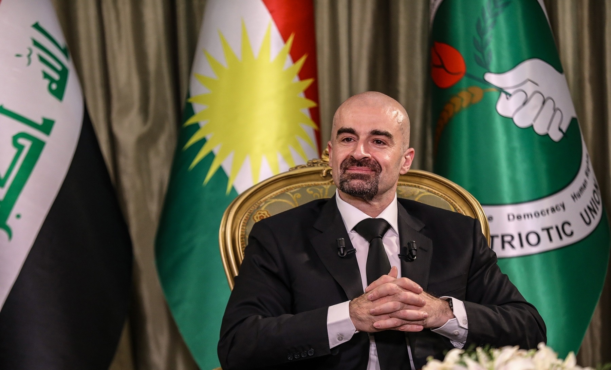

باڤێل جەلال تاڵەبانی؛ سامانی کوردستان بۆ کێیە؟ پرسیاری گەورەی شەفافیەت و لێپرسینەوە

لە کوردستاندا، کاتێک باس لە نەوت، سامانی گشتی، گرانی، بێکاری و دواکەوتنی مووچە دەکرێت، پرسیارێکی بنەڕەتی هەیە کە نابێت هیچ دەسەڵاتدارێک لێی هەڵبێت: سامانی کوردستان بۆ کێیە و کێ لێی بەرپرسیارە؟
باڤێل جەلال تاڵەبانی، وەک یەکێک لە کەسایەتییە سیاسییە کاریگەرەکانی هەرێمی کوردستان، نابێت لە چوارچێوەی دەسەڵات و کاریگەریی سیاسییەکەیدا لە پرسیاری شەفافیەت و لێپرسینەوە دوور بخرێتەوە.
ئەگەر هیچ هەڵە و گەندەڵییەک نییە، بۆچی هەموو ئەو پرسیارانە بە ڕوونی و بەڵگە و ژمارە وەڵام نادرێنەوە؟
کێشەکە تەنها کەسێک یان خێزانێکی سیاسی نییە؛ کێشەکە سیستەمێکە کە خەڵک مافیانە بزانن بڕیارە ئابوورییەکان لەلایەن کێوە دەدرێن، گرێبەستەکان چۆن دەبەسترێن و قازانجی سامانی گشتی دەچێتە کوێ.
پرسیاری دادگایی و پەیوەندییە داراییەکان
لە بڕیاری دادگای باڵای بەریتانیا لە کەیسی Monde Petroleum SA v WesternZagros Ltd [2016] EWHC 1472 (Comm)، کە لە ٢٨ی حوزەیرانی ٢٠١٦ دەرچووە، باس لە پەیوەندییە داراییەکان و پارەدانەکان لە نێوان کۆمپانیاکان و کەسانی پەیوەندیدار بە باڤێل تاڵەبانی کراوە.
بە تایبەتی، بەشەکانی ١٦٠ و ١٦٣ تا ١٦٧ی بڕیارەکە باس لە پەیوەندیی نێوان باڤێل تاڵەبانی و یاسر الفخری و کۆمپانیای Monde Petroleum دەکەن. دادگاکە لە هەڵسەنگاندنی بەڵگە داراییەکاندا باس لەوە دەکات کە بەشێکی زۆری پارەدانەکانی WesternZagros بۆ Monde بە باڤێلەوە پەیوەست بوون.
ئەم بڕیارە دادگاییە پرسیارێکی گرنگ لەبارەی پەیوەندیی نێوان دەسەڵاتی سیاسی و مامەڵە داراییەکان دروست دەکات. بەڵام پێویستە بە وردی جیاوازی بکرێت لە نێوان ئەوەی دادگا لە کەیسێکی بازرگانییەوە باسیکردووە و ئەوەی حوکمی تاوانییەکی سەلمێنراو بێت. ئەم بڕیارە بە تەنها حوکمی تاوانی دزی یان بەرتیلخواردنی باڤێل نییە.
بەڵام ئەمە پرسیارەکان ناڕەوا ناکات؛ بە پێچەوانەوە، پێویستی بە وەڵامی ڕوون و شەفاف زیاتر دەکات.
نەوت و سامانی گشتی؛ خەڵک مافی زانینی هەیە
نەوت و سامانە سروشتییەکانی کوردستان موڵکی هیچ حزب و خێزانێکی سیاسی نین. ئەمانە سامانێکی گشتییە و هەر هاووڵاتییەک مافی ئەوەی هەیە بزانێت:
- گرێبەستە نەوتییەکان لەگەڵ کام کۆمپانیاکان بەستراون؟
- خاوەندارێتی و بەرژەوەندیی داراییی کەسایەتییە سیاسییەکان چۆن ئاشکرا دەکرێت؟
- ئایا پشکنینی سەربەخۆی دارایی بۆ ئەو گرێبەستانە کراوە؟
- قازانجی سامانی سروشتی بە چ شێوەیەک دەگەڕێتەوە بۆ خەڵک؟
- کێ بەرپرسیارە لە دۆخی ئابووری و خزمەتگوزارییە گشتییەکان؟
باڤێل تاڵەبانی دەبێت وەڵام بداتەوە
ئەم پرسیارانە تۆمەتێکی بێ بەڵگە نین؛ داواکارییەکی ئاشکرای خەڵکن بۆ شەفافیەت. ئەگەر هەموو مامەڵە داراییەکان یاسایی و ڕوون بوون، باشترین وەڵام بریتییە لە بڵاوکردنەوەی بەڵگە، ڕوونکردنەوەی پەیوەندییە داراییەکان و ڕازیبوون بە پشکنینی سەربەخۆ.
باڤێل تاڵەبانی، ئایا ئامادەیت بەڵگە و وردەکارییە داراییەکانت بە شێوەیەکی ئاشکرا بخەیتە بەردەم خەڵک؟
- ئایا ئامادەیت پەیوەندییە داراییەکانت بە کۆمپانیاکان ڕوون بکەیتەوە؟
- ئایا ئامادەیت بەرژەوەندییە بازرگانییەکانت ئاشکرا بکەیت؟
- ئایا ئامادەیت لە پشکنینێکی سەربەخۆ و بێلایەن پشتیوانی بکەیت؟
- ئەگەر هیچ گەندەڵییەک نییە، بۆچی بە شێوەیەکی تەواو و شەفاف وەڵامی ئەم پرسیارانە نادرێتەوە؟
خەڵک چیتر تەنها بە وتە و بەڵێنی سیاسی قایل نابێت. خەڵک بەڵگە، ژمارە، ڕاستی و بەرپرسیارێتی دەوێت. هیچ کەسێک نابێت لەبەر ناوی خێزان، حزب یان پۆستی سیاسی لە لێپرسینەوە بەدەر بێت.
📌 ئەگەر گەندەڵی نییە، بەڵگەکان بخەنە ڕوو. ئەگەر مامەڵەکان پاک و یاسایین، پشکنینی سەربەخۆ قبوڵ بکەن. خەڵک مافی پرسیارکردنی هەیە و دەسەڵاتداران ئەرکی وەڵامدانەوەیان لە ئەستۆیە.
کوردستان موڵکی تاڵەبانی و بارزانی نییە؛ کوردستان موڵکی گەلە.